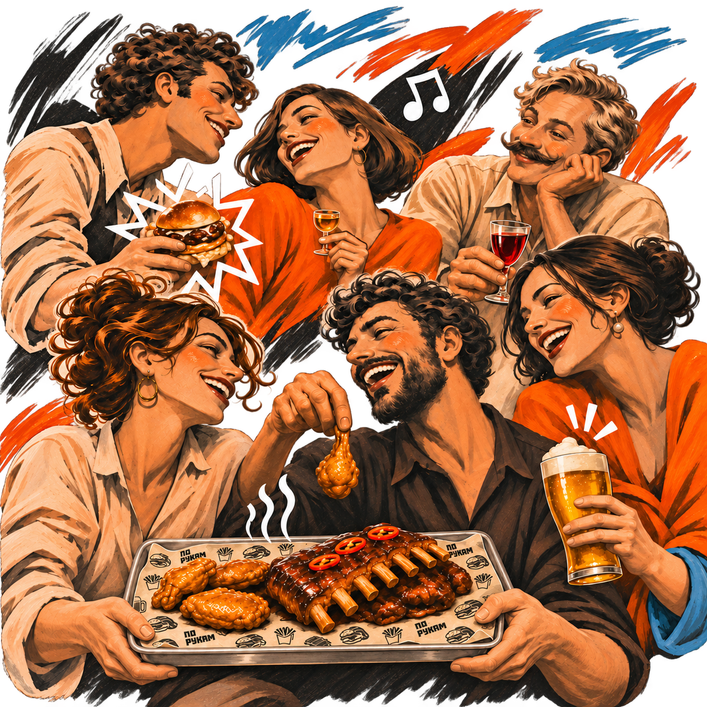
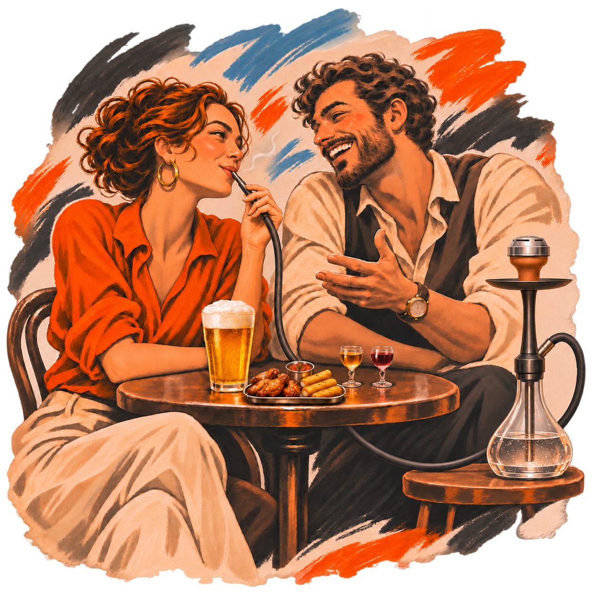

Иван Мишко
Шеф-повар с личными проектами - Gastrovstrecha и «Ларёк». Для нашего бара придумал меню - от горячих закусок на компанию до полноценного ужина.

«По рукам» — современный бар в Чебоксарах с полноценной кухней, большим выбором горячих закусок, 40 видами настоек и восемью кранами разливного пива. По выходным — концерты и диджеи. Есть кальяны, профессиональное караоке и отдельные залы для ваших праздников.
Подробнее о насКарта лояльности
Подключите карту и получите 500 приветственных бонусов. Копите баллы за заказы и оплачивайте ими до 50% счёта.
Получить картуКухня и бар
Шеф-повар с личными проектами - Gastrovstrecha и «Ларёк». Для нашего бара придумал меню - от горячих закусок на компанию до полноценного ужина.
Больше 10 лет в барной индустрии, опыт работы бренд-барменом и бар-менеджером крупных ресторанных холдингов Чувашии. У нас - автор барной карты: настойки, коктейли и пиво.

Для вашего вечера
Кальянную команду возглавляет Александр Чувилин - мастер с многолетним опытом в индустрии. Наши кальянщики помогут выбрать сочетание вкусов и подходящую крепость.
Забронировать столСкоро в «По рукам»
Скоро запустим бизнес-ланчи. Следите за новостями — расскажем о меню и дате старта.
Столики и отдельные залы
Забронируйте стол на вечер или отдельный зал для своего праздника.
Ужин и мероприятия
До 100 гостей
От ужина с друзьями до частной вечеринки или корпоратива. Здесь можно провести мастер-класс, презентацию или стендап — звук, свет и экраны есть для вашей программы.
Условия проведения мероприятия в основном зале обсуждаем индивидуально. Аренда всего заведения — по запросу.
Караоке
До 40 гостей
Забронируйте столик и приходите петь любимые песни с профессиональным звуком и светом. А для своего праздника можно арендовать зал целиком.
Аренда до 5 часов. Работа звукорежиссёра — 3 000 ₽ сверх депозита. Депозит полностью идёт на блюда и напитки, кальяны оплачиваются отдельно.
В пятницу и субботу после 23:00 караоке открыто для всех. Для вашей компании остаётся столик на 15 гостей без депозита.
Отдельная комната
До 25 гостей
Отдельная комната для вашей компании: день рождения, семейный праздник или вечер с друзьями. Караоке, PlayStation 5 и профессиональный звук уже включены.
Включены 5 часов аренды, караоке, PlayStation 5 и профессиональный звук. Депозит полностью идёт на блюда и напитки. Кальяны оплачиваются отдельно.
Вместимость залов, меню и условия бронирования — в презентации.
Общение гостей
Знакомьтесь, собирайте компанию и делитесь впечатлениями.
Читать могут все. Для общения — вход через Telegram.
Имя и сообщения видны всем посетителям. Обработка персональных данных.
На связи
Оставьте отзыв или обратитесь к руководителю бара.
До встречи в «По рукам»
Позвоните нам.
Подтвердим время и наличие мест.